The mass energy-transfer coefficient, μtr/ρ, when multiplied by the photon energy fluence ψ (ψ = ΦE, where Φ is the photon fluence and E the photon energy), gives the dosimetric quantity kerma. As discussed in depth by Carlsson (1985), kerma has been defined (ICRU Report 33, 1980) as (and is an acronym for) the sum of the kinetic energies of all those primary charged particles released by uncharged particles (here photons) per unit mass. Thus μtr/ρ takes into account the escape only of secondary photon radiations produced at the initial photon-atom interaction site, plus, by convention, the quanta of radiation from the annihilation of positrons (assumed to have come to rest) originating in the initial pair- and triplet-production interactions.
Hence μtr/ρ is defined as
| 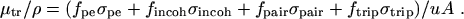 | (eq 7) |
In (eq 7), coherent scattering has been omitted because of the negligible energy transfer associated with it, and the factors f represent the average fractions of the photon energy E that is transferred to kinetic energy of charged particles in the remaining types of interactions. These energy-transfer fractions are given by
| 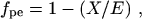 | (eq 8) |
where X is the average energy of fluorescence radiation (characteristic x rays) emitted per absorbed photon;
| 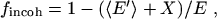 | (eq 9) |
where 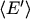 is the average energy of the Compton-scattered photon;
| 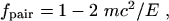 | (eq 10) |
where mc2 is the rest energy of the electron; and
| 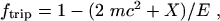 | (eq 11) |
The fluorescence energy X in (eq 8), (eq 9), and ( 11) depends on the distribution of atomic-electron vacancies produced in the process under consideration and is in general evaluated differently for photoelectric absorption, incoherent scattering, and triplet production. Moreover, X is assumed to include the emission of "cascade" fluorescence x rays associated with the complete atomic relaxation process initiated by the primary vacancy, the significance of which has been pointed out by Carlsson (1971).
As only the characteristics of the target atom are involved in calculating μtr/ρ, the mass energy-transfer coefficient for homogeneous mixtures and compounds can be obtained in a manner analogous to that for μ/ρ:
| 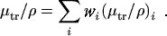 | (eq 12) |
The mass energy-absorption coefficient involves the further emission of radiation produced by the charged particles in traveling through the medium, and is defined as
| 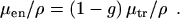 | (eq 13) |
The factor g in (eq. 13) represents the average fraction of the kinetic energy of secondary charged particles (produced in all the types of interactions) that is subsequently lost in radiative (photon-emitting) energy-loss processes as the particles slow to rest in the medium. The evaluation of g is accomplished by integrating the cross section for the radiative process of interest over the differential tracklength distribution established by the particles in the course of slowing down. In the continuous-slowing-down approximation, the tracklength distribution is replaced by the reciprocal of the electron or positron total stopping power of the medium. Even assuming Bragg additivity for the stopping power (that now appears in the denominator of the integral), simple additivity for μen/ρ or - as suggested by Attix (1984) - for g is formally incorrect. When the numerical values of g are relatively small, the errors in μen/ρ incurred by using simple additivity schemes are usually small, a consequence partially mitigating the use additivity, particularly for photon energies below 20 MeV. However, additivity has not been used in the present work.
For the values of μen/ρ given in Table 3 and Table 4, the evaluation of g takes into explicit account (a) the emission of bremsstrahlung, (b) positron annihilation in flight, (c) fluorescence emission as a result of electron- and positron-impact ionization, and (d) the effects on these processes of energy-loss straggling and knock-on electron production as the secondary particles slow down (i.e., of going beyond the continuous-slowing-down approximation). This scheme thus goes beyond that of ICRU Report 33 (1980) which, perhaps by oversight, formally includes only (a) above, and of previous work, which usually includes (a) and (b).
For the calculation of g, the radiative (bremsstrahlung) stopping powers used are based on the results by Seltzer and Berger (1985, 1986) and Kim et al. (1986), and are very slightly different from the values used in ICRU Report 37 (1984). The collision stopping powers, evaluated according to the prescriptions in ICRU Report 37 (1984), include departures from simple Bragg additivity due to chemical-binding, phase, and density effects, as reflected in the choice of the mean excitation energy I and density ρ for the medium. These departures from Bragg additivity for the stopping power of the matrix can result in discernable differences in the mass energy-absorption coefficient, such as between those for water vapor and liquid.
Further details of the calculations are given in Seltzer (1993) and will not be repeated here. Instead, a summary of expressions used for the calculation of g is given below. The formulas include the integration over the initial particle spectra, and have been generalized to include mixtures and compounds.
Photoelectric Absorption. The radiative losses for the photoelectrons have been evaluated according to
| 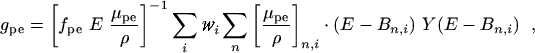 | (eq 14) |
where μpe/ρ is the total
photoeffect mass attenuation coefficient for an incident photon of energy
E in the medium,
| 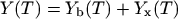 | (eq 15) |
is the total radiative yield. The total radiative yield has been evaluated as the sum of two components. The bremsstrahlung yield, Yb(T), is the mean fraction of the initial kinetic energy T of an electron (or positron) that is converted to bremsstrahlung energy as the particle slows down to rest; and the x-ray energy yield, Yx(T), usually very much smaller than Yb(T), is the mean fraction of the initial kinetic energy converted to fluorescence emission due to ionization by the electron (or positron) in the course of slowing down. The very small radiative losses for the associated Auger electrons have been neglected.
Incoherent (Compton) Scattering. For incoherent scattering
| 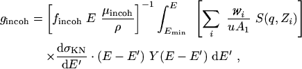 | (eq 16) |
where S(q,Zi) is the incoherent scattering factor, taken from the compilation of Hubbell et al. (1975), dσKN/dE′ is the Klein-Nishina cross section differential in the Compton-scattered photon energy E′, Emin = E/(1 + 2E/mc2) is the minimum energy of the scattered photon (corresponding to 180° scattering), and Y(T) is the total radiative yield.
Pair and Triplet production. The radiative losses from electrons and positrons created in the pair and triplet processes, including the effects of positron annihilation in flight, have been evaluated according to:
| 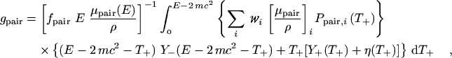 | (eq 17) |
where Ppair,i(T+)dT+ is the probability that the positron from a pair-production interaction with the ith constituent atom will have a kinetic energy between T+ and T+ + dT+, Y-(T-) and Y+(T+) are the total radiation yields for the electrons and positrons, respectively, and η(T+) is the correction for positron annihilation in flight. Pair spectra have been evaluated using Bethe-Heitler theory in conjunction with screening and Coulomb corrections. The annihilation-in-flight correction has been derived on the basis outlined in Berger (1961), and has been evaluated using the two-quanta annihilation-in-flight cross section of Bethe (1935) plus estimates for the one-quantum annihilation-in-flight cross section.
Computation of gtrip proceeds similarly, but using the threshold for triplet production of 4 mc2 instead of 2 mc2 in (eq 17), and using the Wheeler-Lamb (1939) expressions for the screening corrections to the triplet spectra.
Abstract | Introduction | Mass Atten. Coef. | Mass Energy-Absorp. Coef. | Summary | References